随机过程
Contents
随机过程#
课程内容包括：
随机过程的基本概念
Poisson过程
Markov过程
随机采样与随机模拟
一、随机过程基本概念#
随机变量：随机变量\(X\)是定义在样本空间\(\Omega\)上的函数，当x是\(X\)的观测值时，存在\(\Omega\)中的\(w\)使得\(x=X(w)\)
随机向量：随机向量\((X_1,X_2,...,X_n)\)是定义在样本空间\(\Omega\)上的n元函数，当\((x_1,x_2,...,x_n)\)是\((X_1,X_2,...,X_n)\)的观测值时，存在w使得\((x_1,x_2,...,x_n) = (X_1(w),X_2(w),...,X_n(w))\)，这时称\((x_1,x_2,...,x_n)\)为\((X_1,X_2,...,X_n)\)的一次观测或者一次实现。
随机过程：设T为\((-\infty,+\infty)\)的子集，若对每个\(t\in T\)，\(X_t\)是随机变量，则称随机变量的集合\(\{X_t|t\in T \}\)是随机过程。当每个t都有一次观测，那么会形成一条曲线，则称这条曲线为一条轨道或一条轨迹。
有限维分布：对于任何正整数m和T中互不相同的\(t_1,...,t_m\)，称\((X_{t_1},...,X_{t_m})\)的联合分布为随机过程\(\{X_t|t\in T \}\)的一个有限维分布，称全体的有限维分布为该随机过程的概率分布。
随机过程的同分布：如果随机过程\(\{X_t|t\in T \}\)与随机过程\(\{Y_t|t\in T \}\)有相同的有限维分布，则称他们同分布。
随机过程的独立：如果随机过程\(\{X_t|t\in T \}\)中任意选出来的\((X_{t_1},...,X_{t_i})\)与从\(\{Y_t|t\in T \}\)中选出来的\((Y_{s_1},...,Y_{s_j})\)是相互独立的，则称两个随机过程独立。
随机序列：如果时间集合T是整数，就是一个随机序列（时间序列），记作\(X_n\)
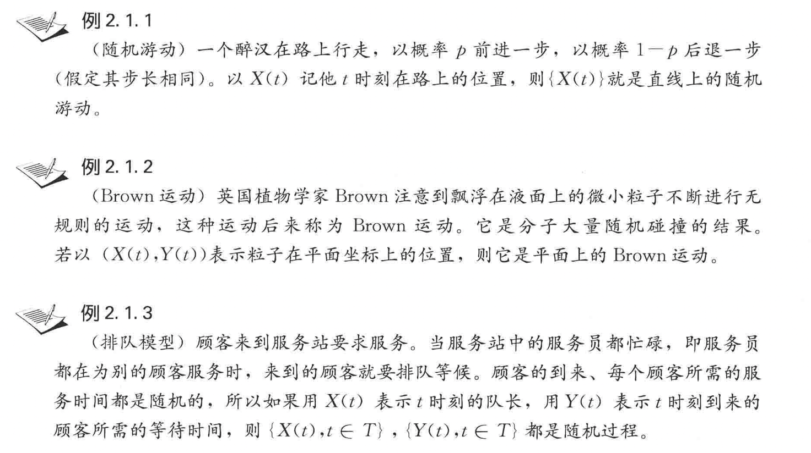
二、Poisson过程#
（一）计数过程#
计数过程：随机过程 \(\{N(t), t \geqslant 0\}\) 称为计数过程，如果 \(N(t)\) 表示从 0 到 \(t\) 时 刻某一特定事件 \(A\) 发生的次数，它具备以下两个特点:
(1) \(N(t) \geqslant 0\) 且取值为整数;
(2) 当 \(s<t\) 时 \(, \quad N(s) \leqslant N(t)\)且 \(N(t)-N(s)\) 表示 \((s, t]\) 时间内事件 \(A\) 发生的 次数。
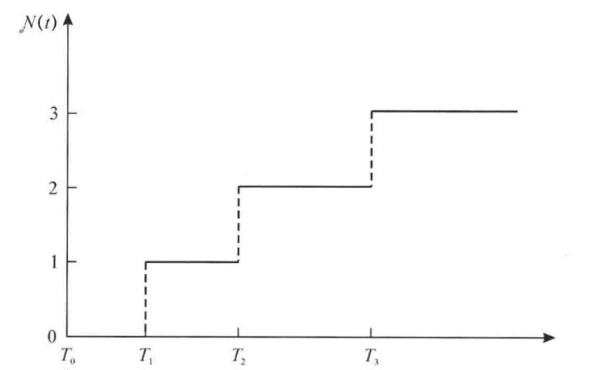
独立增量性：如果在互不相交的时间段内发生事件的个数是相互独立的，则称相应的计数过程\({N(t)}\)具有独立增量性。即：对任意的正整数n和\(0\le t_1<t_2<...<t_n\)，随机变量\(N(0),N(0,t_1),N(t_1,t_2],...,N(t_{n-1},t_{n}]\)是相互独立。
平稳增量性：如果在长度相等的时间段内，事件发生的个数的概率分布是相同的，则称相应的计数过程具有平稳增量性。即：对于任意\(s>0,t_2>t_1\ge 0\)，随机变量\(N(t_1+s,t_2+s]\)与\(N(t_1,t_2)\)同分布，其主要的性质与起始点\(t_1,t_2\)无关，与时间间隔有关。
拓展思考：
（1）严平稳过程：如果随机过程 \(\{X(t), t \in T\}\) 对任意的 \(t_{1}, t_{2}, \cdots, t_{n} \in T\) 和任意的 \(h\) （使得 \(\left.t_{i}+h \in T, i=1,2, \cdots, n\right)\) 有 \(\left(X\left(t_{1}+h\right), X\left(t_{2}+h\right), \cdots, X\left(t_{n}+h\right)\right)\) 与 \(\left(X\left(t_{1}\right), X\left(t_{2}\right), \cdots, X\left(t_{n}\right)\right)\) 具有相同的联合分布，记为: $\( \left(X\left(t_{1}+h\right), X\left(t_{2}+h\right), \cdots, X\left(t_{n}+h\right)\right) \stackrel{\mathrm{d}}{=}\left(X\left(t_{1}\right), X\left(t_{2}\right), \cdots, X\left(t_{n}\right)\right) \)\( 则称 \){X(t), t \in T}\( 为严平稳的。 （2）宽平稳过程：如果随机过程 \)X(t)\( 的所有二阶矩都存在，并且 \)E[X(t)\rfloor=\mu,\( 协方差函数 \)\gamma(t, s)\( 只与时间差 \)t-s\( 有关，则称 \){X(t), t \in T}$ 为宽平稳过程或二阶平稳过程。
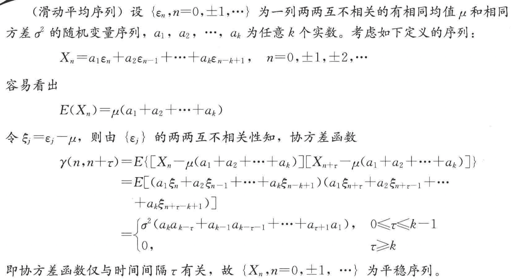
（3）独立增量过程：如果对任意 \(t_{1}, t_{2}, \cdots, t_{n} \in T, t_{1}<t_{2}<\cdots<t_{n},\) 随机变量 \(X\left(t_{2}\right)-\)
\(X\left(t_{1}\right), X\left(t_{3}\right)-X\left(t_{2}\right), \cdots, X\left(t_{n}\right)-X\left(t_{n-1}\right)\) 是相互独立的，则称 \(\{X(t), t \in T\}\) 是独立增量过程。
如果对任意 \(t_{1}, t_{2},\) 有 \(X\left(t_{1}+h\right)-X\left(t_{1}\right) \stackrel{\mathrm{d}}{=} X\left(t_{2}+h\right)-X\left(t_{2}\right),\) 则称 \(\{X(t), t \in T\}\) 是平稳增量过程。 兼有独立增量和平稳增量的过程称为平稳独立增量过程。
（二）泊松过程#
泊松过程（定义一）：计数过程 \(\{N(t), t \geqslant 0\}\) 称为参数为 \(\lambda(\lambda>0)\) 的 Poisson 过程， 如果
(1) \(N(0)=0\) ;
(2)过程有独立增量;
(3)在任一长度为 \(t\) 的时间区间中事件发生的次数服从均值为 \(\lambda t\) 的 Poisson 分 布，即对一切 \(s \geqslant 0, t>0,\) 有： $\( P\{N(t+s)-N(s)=n\}=\mathrm{e}^{-\lambda t} \frac{(\lambda t)^{n}}{n !}, \quad n=0,1,2, \cdots \)$
由上式可以看出，\(\{N(t+s)-N(s)=n\}\)与起始点s无关，只与时间间隔t有关，因此具有平稳增量性。设\(\{N(t) \}\)是强度为\(\lambda\)的泊松过程，容易计算\(E(N(t)) = \lambda t\)，于是\(\lambda = \frac{E(N(t))}{t}\)是单位时间内事件发生的次数的平均数（强度）。
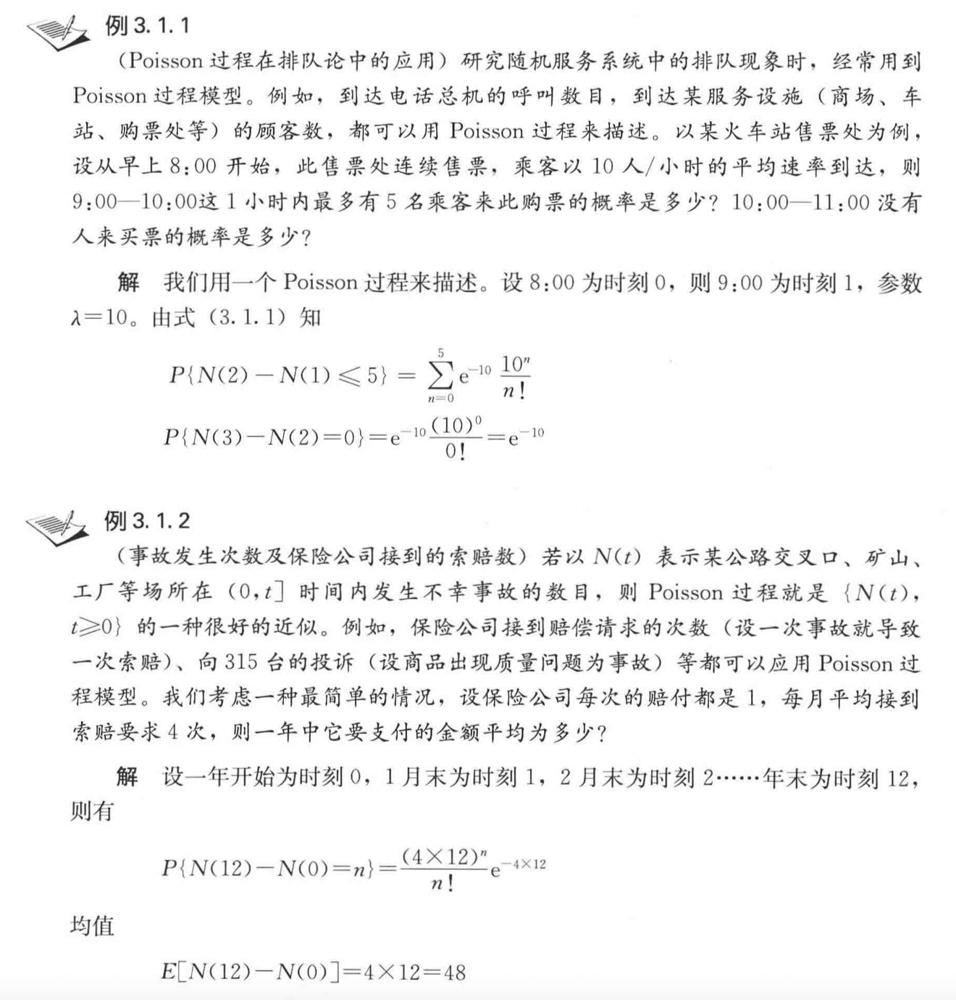
为什么实际中有这么多的现象可以用 Poisson 过程来反映呢? 其根据是小概率事件原理。我们在对概率论的学习中已经知道，Bernoulli 试验中每次试验成功的概率很 小，而试验的次数很多时，二项分布会逼近 Poisson 分布。这一想法很自然地推广到随机过程的情况。比如上面提到的事故发生的例子，在很短的时间内发生事故的概率 是很小的，但假如考虑很多个这样很短的时间的连接，事故的发生将会有一个大致稳定的速率，这很类似于 Bernoulli 试验以及二项分布逼近 Poisson 分布时的假定。
泊松过程（定义二）：设\(\lambda>0\)是一个常数，如果计数过程\(\{N(t) \}\)满足以下条件，则称他为强度为\(\lambda\)的泊松过程：
（1）\(N(0)=0\);
（2）\(\{N(t) \}\)是独立增量过程，有平稳增量性；
（3）一般性：对任何\(t\ge 0\)，当正数h->0时，有：\(P(N(h)=1)=\lambda h + o(h)\)与\(P(N(h)\ge 2) = o(h)\)
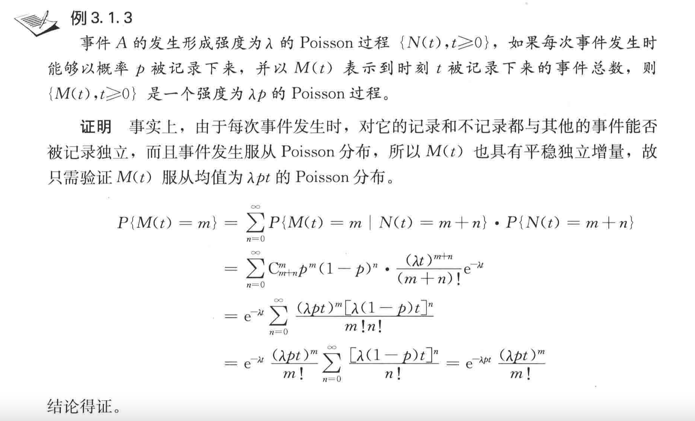
（三）呼叫泊松流#
呼叫流：设\(\{N(t) \}\)是强度为\(\lambda \)的泊松过程，定义\(S_0=0\)，用\(S_n\)表示第n个事件发生的时刻，简称为第n个到达时刻或者第n个呼叫时，由于\(S_0,S_1,...,S_n\)依次到达，所以又称\(\{S_t \}\)为泊松过程\(\{N(t) \}\)的呼叫流。
基本关系： $\( \{N(t)\ge n \} = \{S_n\le t \}\\ \{N(t)= n \} = \{S_n\le t<S_{n+1} \} \)$
等待间隔：设\(\{S_n \}\)是泊松过程\(\{N(t) \}\)的呼叫流，引入\(X_n=S_n-S_{n-1},n=1,2,...\)，则\(X_n\)是第n-1个事件之后等待第n个事件发生的等待间隔，称为第n个等待间隔。
泊松过程\(\{N(t) \}\)的等待间隔\(X_1,...,X_n,...\)是来自指数总体\(\epsilon(\lambda)\)的随机变量。
证明：首先考虑 \(X_{1}\) 的分布，注意到事件 \(\left\{X_{1}>t\right\}\) 等价于事件 \(\{N(t)=0\},\) 即\((0, t]\) 时间内没有事件发生。因此 $\( P\left\{X_{1}>t\right\}=P\{N(t)=0\}=\mathrm{e}^{-\lambda t} \)\( 从而 \)\( P\left\{X_{1} \leqslant t\right\}=1-\mathrm{e}^{-\lambda t} \)\( 再来看 \)X_{2}:\( \)\( P\left\{X_{2}>t \mid X_{1}=s\right\}=P\left\{N(s+t)-N(s)=0 \mid X_{1}=s\right\} \)\( \)=P{N(s+t)-N(s)=0}(\( 独立增量性 \))\( \)\( =\mathrm{e}^{-\lambda t} \)\( 所以 \)X_{2}\( 与 \)X_{1}\( 独立，且都服从参数为 \)\lambda$ 的指数分布。重复同样的推导，可得定理 结论。
import numpy as np
import matplotlib.pyplot as plt
plt.style.use("ggplot")
# 模拟泊松过程
def poisson_process(n,lmd,times):
## n是模拟的次数,lmd是泊松过程的强度,times是每次模拟发生的次数
fin_list = []
y_list = []
for i in range(n):
mid_list = []
mid_list_y = []
y = 1
for time in range(times):
mid_ans = np.random.exponential(lmd)
mid_list.append(mid_ans)
mid_list_y.append(y)
y = y+1
y_list.append(mid_list_y)
for p,mid in enumerate(mid_list):
if p == 0:
pass
else:
mid_list[p] = sum(mid_list[0:p+1])
fin_list.append(mid_list)
for li,y_li in zip(fin_list,y_list):
li.insert(0,0)
y_li.insert(0,0)
plt.step(li,y_li)
## 开始模拟
poisson_process(10000,0.05,10)
（四）泊松过程的汇合和分流#
泊松过程的汇合：设随机过程\(\{N_1(t) \}\)与\(\{N_2(t) \}\)是相互独立的，强度为\(\lambda_1\)与\(\lambda_2\)的泊松过程，则：\(N(t) = N_1(t) + N_2(t),t \ge 0\)是强度为\(\lambda = \lambda_1 + \lambda_2\)的泊松过程。（多个也成立）
泊松过程的分流：设{N(t)}是强度为\(\lambda\)的泊松过程，\(\{Y_j \}\)是独立同分布的随机序列，且\(P\{Y_j = 1 \} = p,P\{Y_j = 0 \} = q\)（两点分布），计数过程\(\{N_1(t) \}\)与\(\{N_1(t) \}\)分别由\(N_1(t) = \sum\limits_{j=1}^{N(t)}Y_j\)与\(N_2(t) = \sum\limits_{j=1}^{N(t)}(1-Y_j)\)定义，若\(\{Y_j\}\)与\(\{N_1(t)\}\)独立，则\(\{N_1(t)\}\)与\(\{N_2(t)\}\)相互独立，分别为强度\(\lambda_1 = \lambda p,\lambda_2 = \lambda (1-p)\)的泊松过程。
例子：汽车按照泊松流驶入立体交叉桥，经过调查可以知道：由冬边每分钟驶入6辆，由南面驶入6.5辆，由西面驶入9辆，由北面驶入8.5辆汽车；在桥上，每辆车向左或者向右行驶的概率是0.3，直行的概率是0.35，掉头的概率是0.05，计算各个方向上的驶出汽车流的强度。（可以试试动态模拟这个立交桥的汽车行驶情况）
三、马尔可夫过程(离散时间)#
设\(\{X_n|n = 0,1,2,... \}\)是随机序列，若每个\(X_n\)都在S中取值，那么称S为\(\{X_n|n = 0,1,2,... \}\)的状态空间，称S中的元素为状态。
（一）马尔可夫链及其转移概率矩阵#
马尔可夫链：\(\quad\) 随机过程 \(\left\{X_{n}, n=0,1,2, \cdots\right\}\) 称为 Markov 链，若它只取有限或可 列个值（若不另外说明，以非负整数集 \(\{0,1,2, \cdots\}\) 来表示），并且对任意的 \(n \geqslant 0\), 及任意状态 \(i, j, i_{0}, i_{1}, \cdots, i_{n-1},\) 有 $\( P\left\{X_{n+1}=j \mid X_{n}=i, X_{n-1}=i_{n-1}, \cdots, X_{1}=i_{1}, X_{0}=i_{0}\right\}=P\left\{X_{n+1}=j \mid X_{n}=i\right\} \)$
式中， \(X_{n}=i\) 表示过程在时刻 \(n\) 处于状态 \(i,\) 称 \(\{0,1,2, \cdots\}\) 为该过程的状态空间， 记为 S，式子刻画了 Markov 链的特性，称为 Markov 性。对 Markov 链，给 定过去的状态 \(X_{0}, X_{1}, \cdots, X_{n-1}\) 及现在的状态 \(X_{n},\) 将来的状态 \(X_{n+1}\) 的条件分布与 过去的状态独立，只依赖于现在的状态。
直观理解：已知现在\(B = \{X_n = i \}\)，将来\(A = X_{n+1} = j\)与过去\(C = \{X_{n-1}=i_{n-1},...,X_0 = i_0\}\)独立。
（一步）转移概率：\(\left\{X_{n}, n=0,1,2, \cdots\right\}\) 的一步转移概率，简称转移概率，记为 \(p_{i j},\) 它代表处于状态 \(i\) 的 过程下一步转移到状态 \(j\) 的概率。
（一步）转移概率矩阵：\(P = (p_{ij}) = (p_{ij})_{i,j \in I}\)
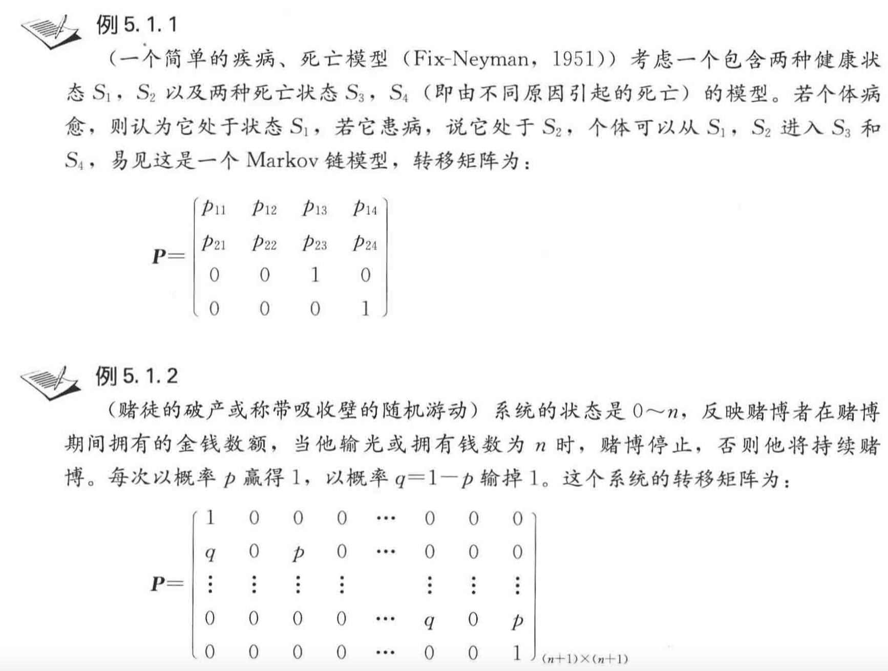
（二）C-K方程#
C-K方程：\(\quad\) Chapman-Kolmogorov 方程，简称 C-K 方程 对一切 \(n, m \geqslant 0, i, j \in S\) 有
(1) \(p_{i j}^{(m+n)}=\sum_{k \in S} p_{i k}^{(m)} p_{k j}^{(n)}\)
(2) \(\boldsymbol{P}^{(n)}=\boldsymbol{P} \cdot \boldsymbol{P}^{(n-1)}=\boldsymbol{P} \cdot \boldsymbol{P} \cdot \boldsymbol{P}^{(n-2)}=\cdots=\boldsymbol{P}^{n}\)
证明：
$\( \begin{aligned} p_{i j}^{(m+n)} &=P\left\{X_{m+n}=j \mid X_{0}=i\right\} \\ &=\frac{P\left\{X_{m+n}=j, X_{0}=i\right\}}{P\left\{X_{0}=i\right\}} \\ &=\sum_{k \in S} \frac{P\left\{X_{m+n}=j, X_{m}=k, X_{0}=i\right\}}{P\left\{X_{0}=i\right\}}\\ &=\sum_{k \in S} \frac{P\left\{X_{m+n}=j, X_{m}=k, X_{0}=i\right\}}{P\left\{X_{0}=i\right\}} \cdot \frac{P\left\{X_{m}=k, X_{0}=i\right\}}{P\left\{X_{m}=k, X_{0}=i\right\}} \\ &=\sum_{k \in S} P\left\{X_{m+n}=j \mid X_{m}=k, X_{0}=i\right\} P\left\{X_{m}=k \mid X_{0}=i\right\} \\ &=\sum_{k \in S} p_{i k}^{(m)} p_{k j}^{(n)} \end{aligned} \)$
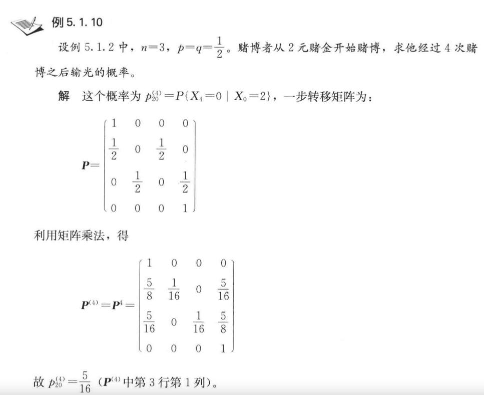
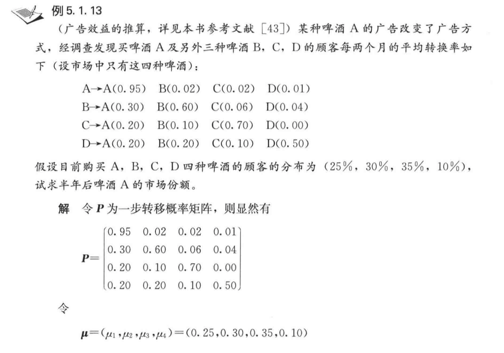
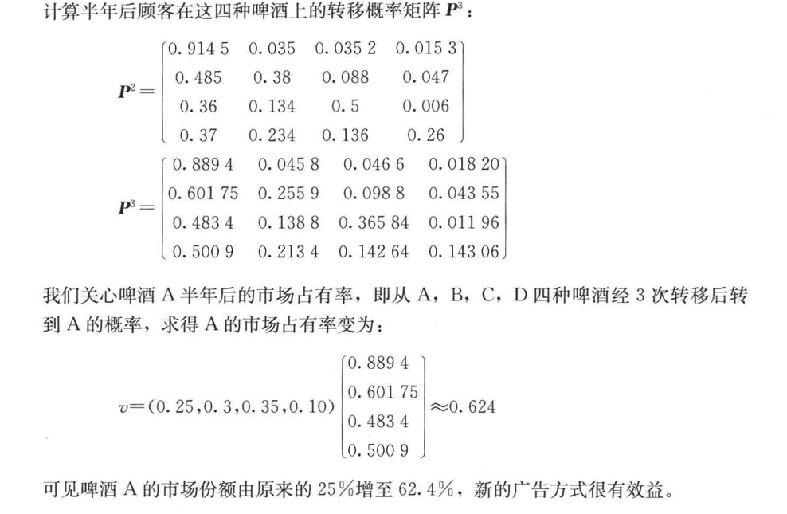
（三）极限分布和平稳条件#
我们举个例子看看什么是极限分布：
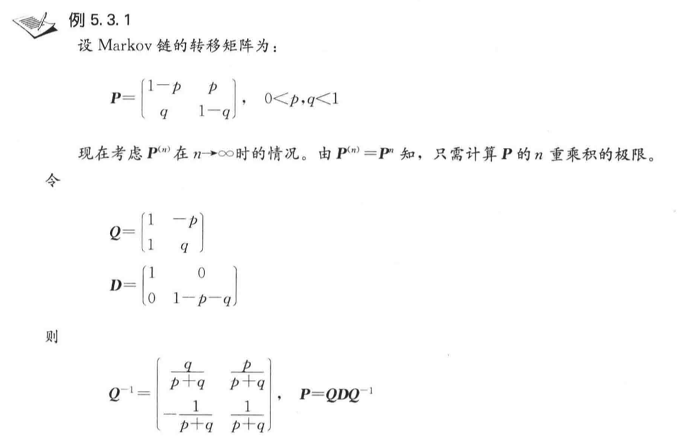
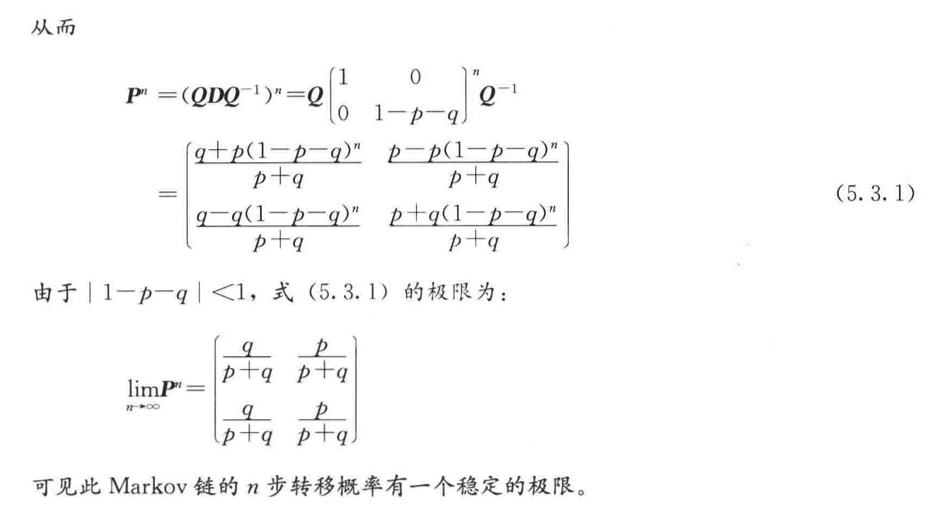
极限分布：对于遍历的 Markov 链，极限 $\( \lim _{n \rightarrow \infty} p_{i j}^{(n)}=\pi_{j}, \quad j \in S \)$ 称为 Markov 链的极限分布。
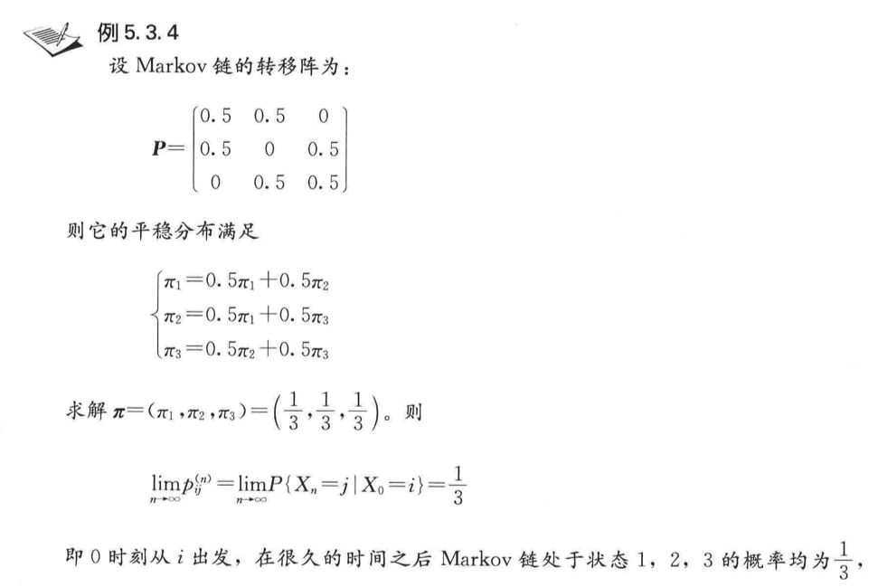
作业：
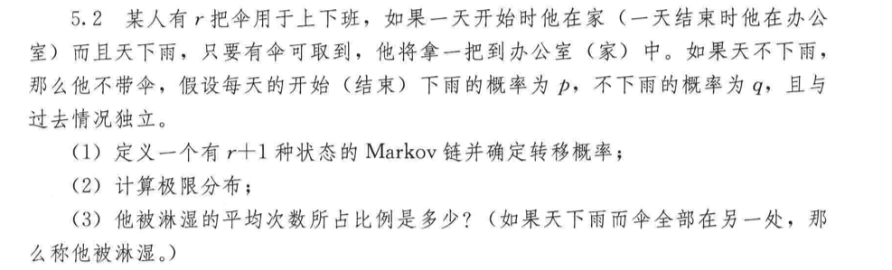
平稳条件（细致平稳条件）：\(\pi_iP_{i,j} = \pi_jP_{j,i}\)（化学反应的动态平衡）
（四）鞅#
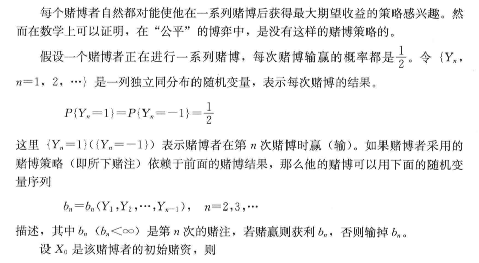
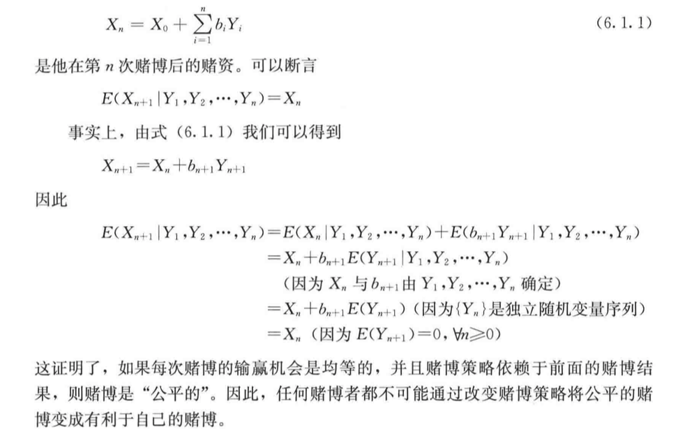
作业：
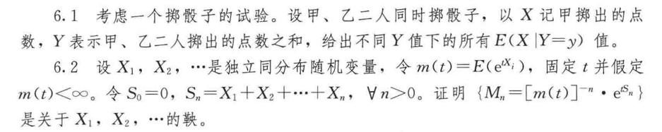
（五）高斯过程#
首先当随机变量是1维的时候，我们称之为一维高斯分布，概率密度函数 \(p(x)=N\left(\mu, \sigma^{2}\right),\) 当 随机变量的维度上升到有限的 \(p\) 维的时候，就称之为高维高斯分布, \(p(x)=N\left(\mu, \Sigma_{p \times p}\right)\) 。而 高斯过程则更进一步，他是一个定义在连续域上的无限多个高斯随机变量所组成的随机过程，换句话说，高斯过程是一个无限维的高斯分布。
高斯过程：对于一个连续域 \(T \quad\) (假设他是一个时间轴），如果我们在连续域上任选 \(n\) 个时刻： \(t_{1}, t_{2}, t_{3}, \ldots, t_{n} \in T,\) 使得获得的一个 \(n\) 维向量 \(\left\{\xi_{1}, \xi_{2}, \xi_{3}, \ldots, \xi_{n}\right\}\) 都满足其是一个 \(n\) 维高斯分布，那么这个 \(\left\{\xi_{t}\right\}\) 就是一个高斯过程。
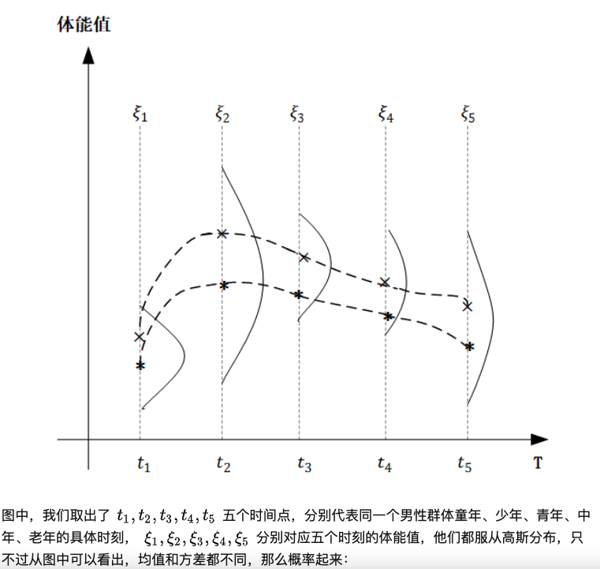